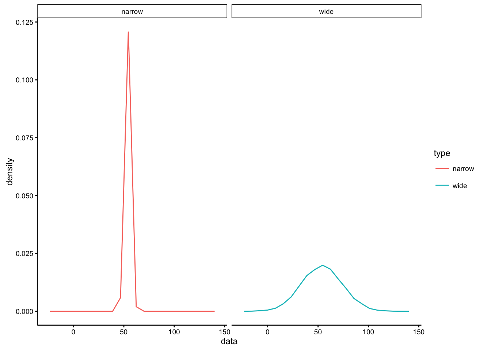
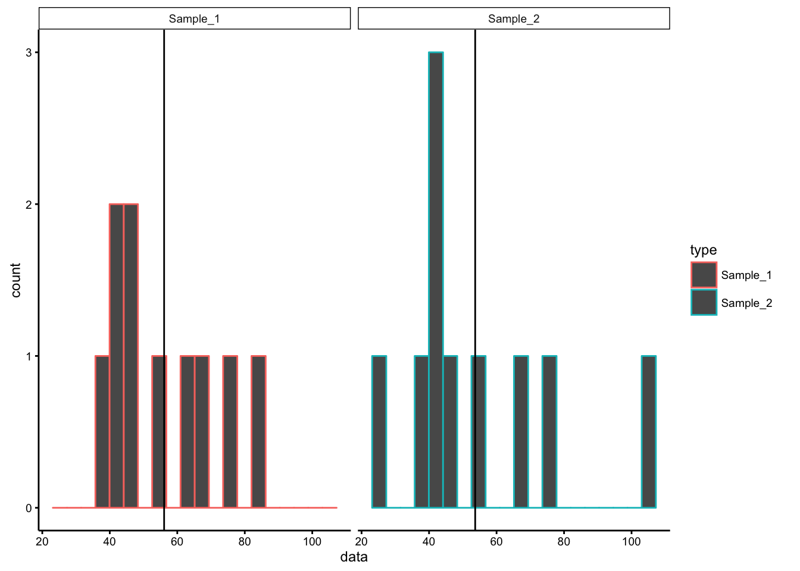
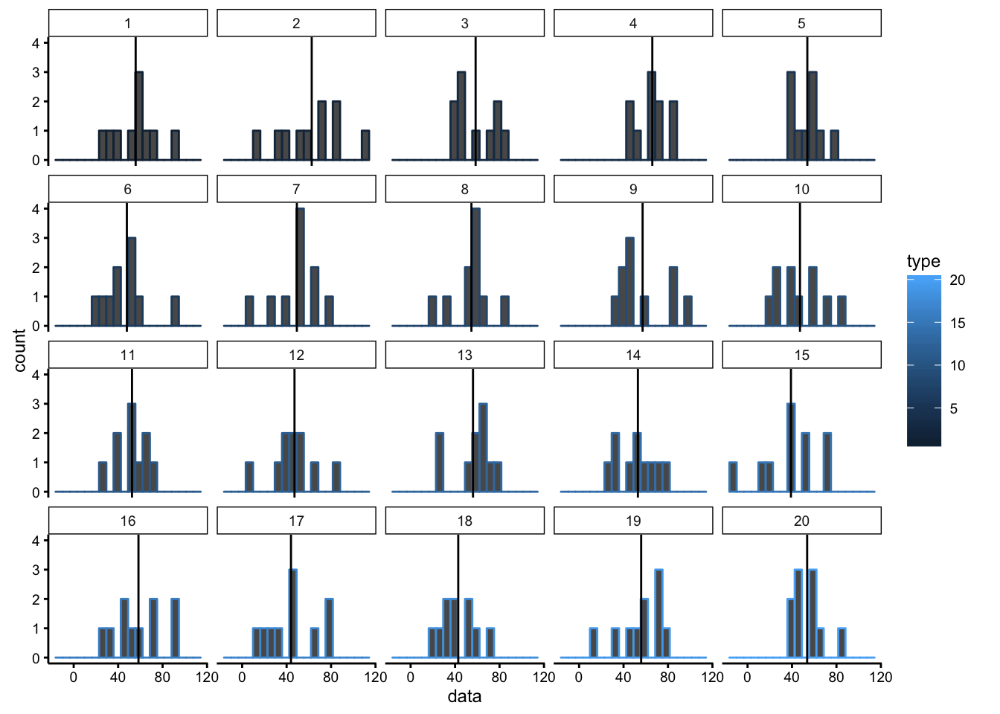
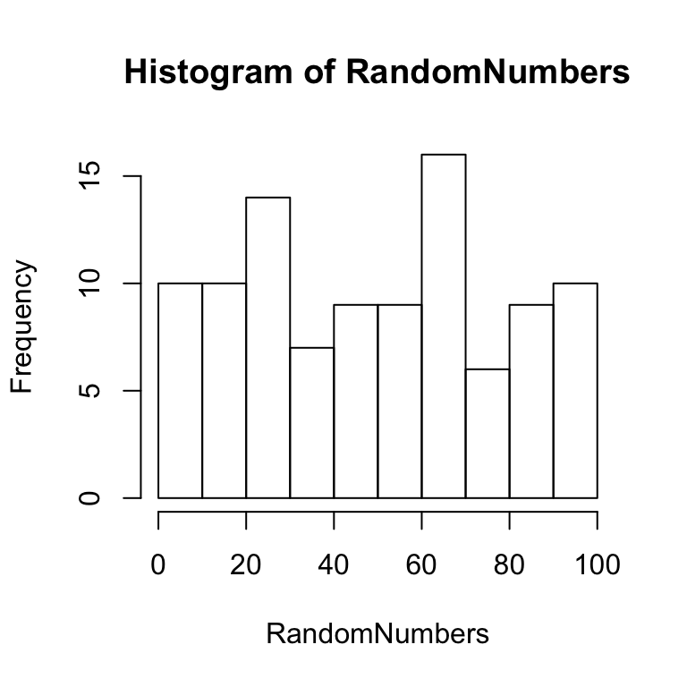
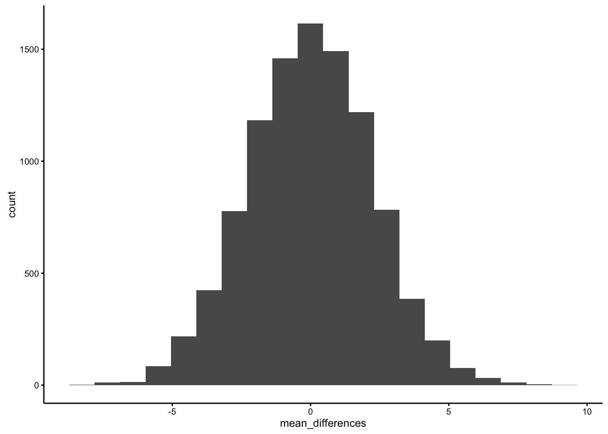
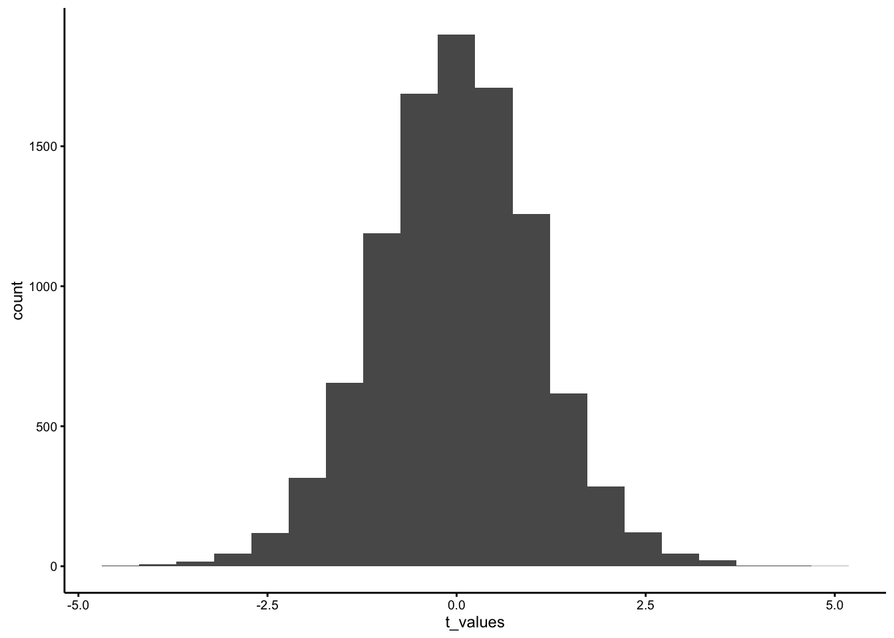
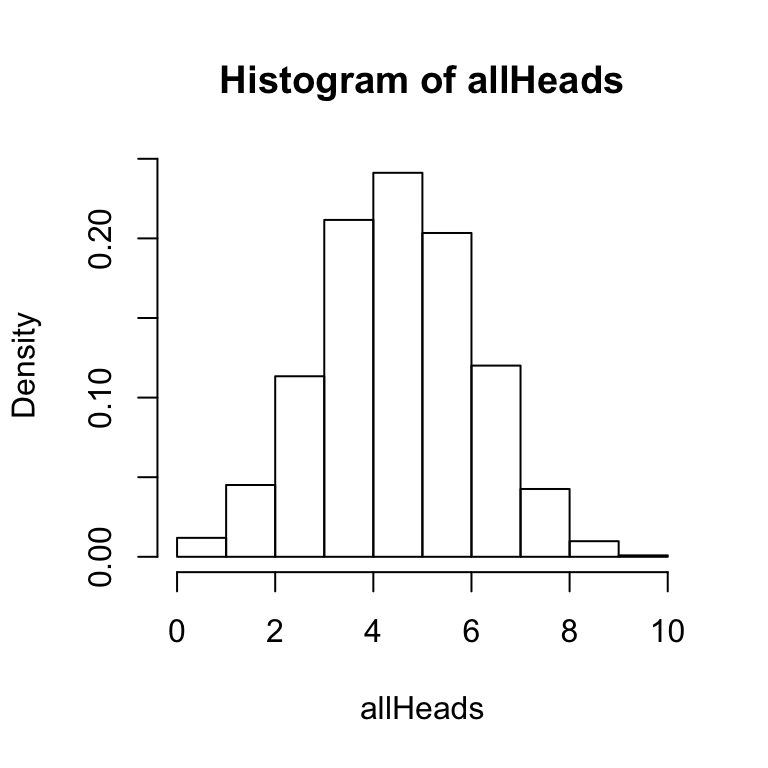
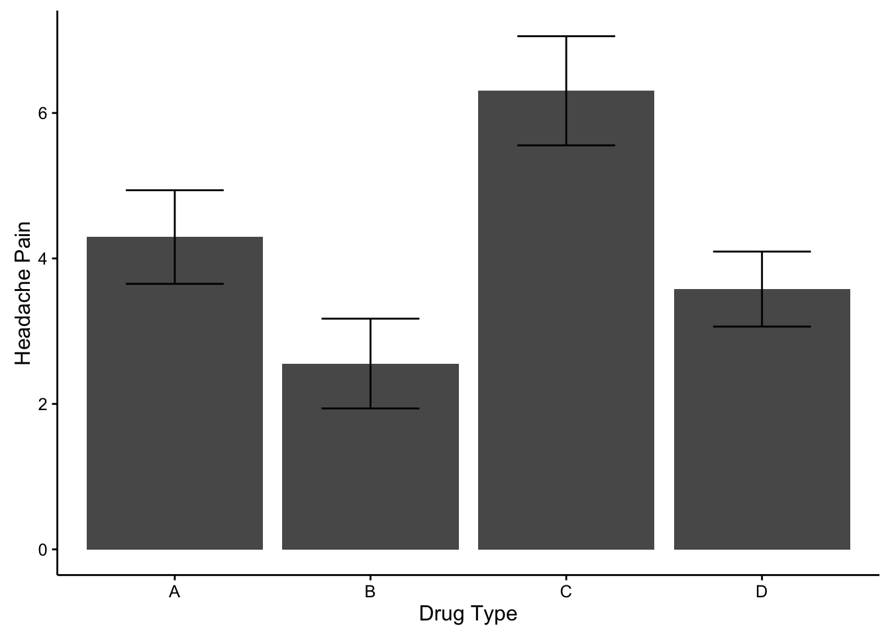
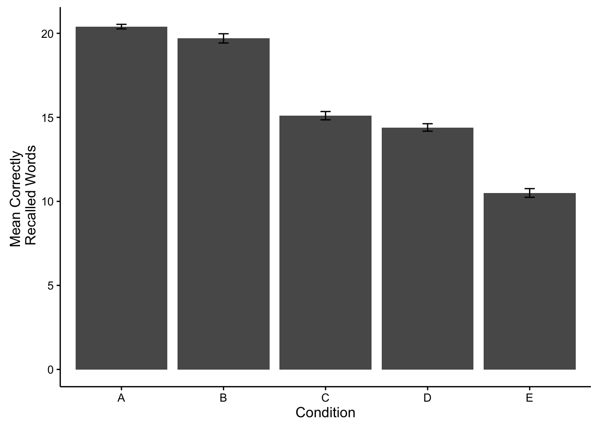

Chapter 4 Single Factor Experiments
To call in the statistician after the experiment is done may be no more than asking him to perform a post-mortem examination: he may be able to say what the experiment died of. —Ronald Fisher
To call in the statistician after the experiment is done may be no more than asking him to perform a post-mortem examination: he may be able to say what the experiment died of. —Ronald Fisher
4.1 Experiments in a nutshell
The primary goal of experiments is to identify causal relationships between things in the world. Experiments do this by a systematic process of measuring how things behave under different conditions.

Figure 4.1: Which switch turns on which light?
People conduct informal experiments all of the time. For example, when you walk into an unfamiliar room and want to turn on a light, what do you do? You find the light switch panel, and then you flip the switches until you find the one that turns a particular light on or off. This process is called trial and error, and involves trying things out until they work. The process of figuring out which switch causes a particular light to turn on or off is very similar to the process of conducting experiments. Let’s use the light-switch example to define some important terms, and then discuss the logic of running an experiment and making inferences about the data that is collected in an experiment.
Experiments begin with a question about a potential causal relationship between two variables. For example, which switch on the panel caused light 1 to turn on? When you flick the switches and look at the lights, you are actually accomplishing three important parts of an experiment: manipulating the independent variables, measuring the dependent variable, and controlling extraneous variables.
The independent variable is the manipulation of different conditions that a researcher controls. The light switches are independent variables that can be manipulated. For example, the first light switch can be up or down, the second light switch can be up or down, and so on.
The dependent variable is the measurement of interest. Each light bulb is a dependent variable that we can measure. For example, we observe whether a light is on off, or perhaps use a special photometer to measure the brightness of the light.
Figure 4.2: Possible outcomes of an experiment asking if Switch 1 controls Light 1
Let’s look at an experiment asking if light switch 1 causes the first light to turn on or off. The experiment involves manipulating switch 1 by turning it up or down, and then observing whether the light turns on or off. There are two simple outcomes. Possible outcome 1 is that the light stays off in both conditions. What inference can we make based off of this pattern of data? In most situations, people would be comfortable with inferring that switch 1 does not cause Light 1 to turn on and off. Possible outcome 2 is that the light turns on when the switch is up, and turns off when the switch is down. What inference can we make based off of this pattern of data? In most situations, people would be comfortable with inferring that switch 1 does cause Light 1 to turn on and off.
It would be nice if the process of figuring out what causes what is as simple as the light-switch example, but even this example is not as simple as it seems. The biggest complication is the inference part. We discussed two plausible inferences for outcomes 1 and 2. However, these inferences might not be true.
For outcome 1 when the light doesn’t turn on, what could be wrong about our inference that switch 1 does not control light 1? Perhaps that switch is wired up to control light 1, but the light is broken; perhaps the wire got disconnected; or, perhaps the light did turn on, but you couldn’t see it because the brightness was very low.
For outcome 2 when the light does turn on, what could be wrong about our inference that switch 1 does control light 1? Here, we at least know that the light works, so we can be confident in our measure of the dependent variable? But, how confident our we that our manipulation of the light switch was the only variable changing in our experiment? This depends on how well the experiment controls extraneous or confounding variables, that might be responsible for the light turning on or off. If you can guarantee that the the only change was switch 1 going up and down, then you can be confident of the inference that switch 1 caused light 1 to turn on and off.
Let’s consider a problematic version of the experiment where you are not controlling other possible confounding variables. For example, pretend that every time you test switch 1, a friend is also testing a different switch. You turn switch 1 up, your friend turns switch 2 up. You turn switch 1 down, your friend turns switch 2 down. If the light turns on and off when the switches go up and down, then what can you infer about light switch 1? Well, switch 1 might control light 1, but so could switch 2. The only way to infer that switch 1 was controlling the light is to eliminate the influence of other possible variables. So, you need to ask your friend to stop testing other switches while you focus on testing switch 1.
To summarize, experiments attempt to discover the causal forces between things in the world. Researchers manipulate the independent variable by systematically changing it across different conditions. And, they measure the dependent variable to see if it changes in any of the conditions. The goal is to make inferences about whether the independent variable causes change in the dependent variable. Generally, when no change in the dependent variable is observed, we infer that the independent variable does not causally influence the dependent variable. But, this strong inference is only valid when the experiment is designed properly so that the researcher can guarantee that they 1) actually varied the independent variable, and 2) the could actually measure possible changes in the dependent variable without error. When the dependent variable does show change across the conditions of the independent variable, then we infer that the independent variable causes change in the dependent variable. But, this strong inference is only valid when the experiment can guarantee that all extraneous or confounding variables were held constant across the conditions of the independent variable.
In psychological experiments, the goal of figuring out what causes what is rarely accomplished by a single experiment. Instead, our inferences about causal relationships are strengthened over many experiments that improve our ability to measure variables of interest, and to create well-controlled conditions where the independent variables are not confounded by extraneous influences.
4.2 An example Psychology Experiment
In the late 1960s social psychologists John Darley and Bibb Latané proposed a counter-intuitive hypothesis. The more witnesses there are to an accident or a crime, the less likely any of them is to help the victim (Darley and Latane 1968).
They also suggested the theory that this phenomenon occurs because each witness feels less responsible for helping—a process referred to as the “diffusion of responsibility.” Darley and Latané noted that their ideas were consistent with many real-world cases. For example, a New York woman named Catherine “Kitty” Genovese was assaulted and murdered while several witnesses evidently failed to help. But Darley and Latané also understood that such isolated cases did not provide convincing evidence for their hypothesized “bystander effect.” There was no way to know, for example, whether any of the witnesses to Kitty Genovese’s murder would have helped had there been fewer of them.
So to test their hypothesis, Darley and Latané created a simulated emergency situation in a laboratory. Each of their university student participants was isolated in a small room and told that he or she would be having a discussion about university life with other students via an intercom system. Early in the discussion, however, one of the students began having what seemed to be an epileptic seizure. Over the intercom came the following: “I could really-er-use some help so if somebody would-er-give me a little h-help-uh-er-er-er-er-er c-could somebody-er- er-help-er-uh-uh-uh (choking sounds)…I’m gonna die-er-er-I’m…gonna die-er-help-er-er-seizure-er- [chokes, then quiet]” (Darley and Latane 1968).
In actuality, there were no other students. These comments had been prerecorded and were played back to create the appearance of a real emergency. The key to the study was that some participants were told that the discussion involved only one other student (the victim), others were told that it involved two other students, and still others were told that it included five other students. Because this was the only difference between these three groups of participants, any difference in their tendency to help the victim would have to have been caused by it. And sure enough, the likelihood that the participant left the room to seek help for the “victim” decreased from 85% to 62% to 31% as the number of “witnesses” increased.
The story of Kitty Genovese has been told and retold in numerous psychology textbooks. The standard version is that there were 38 witnesses to the crime, that all of them watched (or listened) for an extended period of time, and that none of them did anything to help. However, recent scholarship suggests that the standard story is inaccurate in many ways (Manning, Levine, and Collins 2007). For example, only six eyewitnesses testified at the trial, none of them was aware that he or she was witnessing a lethal assault, and there have been several reports of witnesses calling the police or even coming to the aid of Kitty Genovese. Although the standard story inspired a long line of research on the bystander effect and the diffusion of responsibility, it may also have directed researchers’ and students’ attention away from other equally interesting and important issues in the psychology of helping—including the conditions in which people do in fact respond collectively to emergency situations.
The research that Darley and Latané conducted was a particular kind of study called an experiment. Experiments are used to determine not only whether there is a meaningful relationship between two variables but also whether the relationship is a causal one that is supported by statistical analysis. For this reason, experiments are one of the most common and useful tools in the psychological researcher’s toolbox. In this chapter, we look at experiments in detail. We will first consider what sets experiments apart from other kinds of studies and why they support causal conclusions while other kinds of studies do not. We then look at two basic ways of designing an experiment—between-subjects designs and within-subjects designs—and discuss their pros and cons. Finally, we consider several important practical issues that arise when conducting experiments.
4.3 More Experimental Basics
Learning Objectives
- Explain what an experiment is and recognize examples of studies that are experiments and studies that are not experiments.
- Explain what internal validity is and why experiments are considered to be high in internal validity.
- Explain what external validity is and evaluate studies in terms of their external validity.
- Distinguish between the manipulation of the independent variable and control of extraneous variables and explain the importance of each.
- Recognize examples of confounding variables and explain how they affect the internal validity of a study.
4.3.1 What Is an Experiment?
As we saw earlier in the book, an experiment is a type of study designed specifically to answer the question of whether there is a causal relationship between two variables. In other words, whether changes in an independent variable cause changes in a dependent variable. Experiments have two fundamental features. The first is that the researchers manipulate, or systematically vary, the level of the independent variable. The different levels of the independent variable are called conditions. For example, in Darley and Latané’s experiment, the independent variable was the number of witnesses that participants believed to be present. The researchers manipulated this independent variable by telling participants that there were either one, two, or five other students involved in the discussion, thereby creating three conditions. For a new researcher, it is easy to confuse these terms by believing there are three independent variables in this situation: one, two, or five students involved in the discussion, but there is actually only one independent variable (number of witnesses) with three different conditions (one, two or five students). The second fundamental feature of an experiment is that the researcher controls, or minimizes the variability in, variables other than the independent and dependent variable. These other variables are called extraneous variables. Darley and Latané tested all their participants in the same room, exposed them to the same emergency situation, and so on. They also randomly assigned their participants to conditions so that the three groups would be similar to each other to begin with. Notice that although the words manipulation and control have similar meanings in everyday language, researchers make a clear distinction between them. They manipulate the independent variable by systematically changing its levels and control other variables by holding them constant.
4.3.2 Four Big Validities
When we read about psychology experiments with a critical view, one question to ask is “is this study valid?” However, that question is not as straightforward as it seems because in psychology, there are many different kinds of validities. Researchers have focused on four validities to help assess whether an experiment is sound (Kenny and Judd 1981; Morling 2014): internal validity, external validity, construct validity, and statistical validity. We will explore each validity in depth.
4.3.3 Internal Validity
Recall that two variables being statistically related does not necessarily mean that one causes the other. “Correlation does not imply causation.” For example, if it were the case that people who exercise regularly are happier than people who do not exercise regularly, this implication would not necessarily mean that exercising increases people’s happiness. It could mean instead that greater happiness causes people to exercise (the directionality problem) or that something like better physical health causes people to exercise and be happier (the third-variable problem).
The purpose of an experiment, however, is to show that two variables are statistically related and to do so in a way that supports the conclusion that the independent variable caused any observed differences in the dependent variable. The logic is based on this assumption : If the researcher creates two or more highly similar conditions and then manipulates the independent variable to produce just one difference between them, then any later difference between the conditions must have been caused by the independent variable. For example, because the only difference between Darley and Latané’s conditions was the number of students that participants believed to be involved in the discussion, this difference in belief must have been responsible for differences in helping between the conditions.
An empirical study is said to be high in internal validity if the way it was conducted supports the conclusion that the independent variable caused any observed differences in the dependent variable. Thus experiments are high in internal validity because the way they are conducted—with the manipulation of the independent variable and the control of extraneous variables—provides strong support for causal conclusions.
4.3.4 External Validity
At the same time, the way that experiments are conducted sometimes leads to a different kind of criticism. Specifically, the need to manipulate the independent variable and control extraneous variables means that experiments are often conducted under conditions that seem artificial (Bauman et al. 2014). In many psychology experiments, the participants are all undergraduate students and come to a classroom or laboratory to fill out a series of paper-and-pencil questionnaires or to perform a carefully designed computerized task. Consider, for example, an experiment in which researcher Barbara Fredrickson and her colleagues had undergraduate students come to a laboratory on campus and complete a math test while wearing a swimsuit (Fredrickson et al. 1998). At first, this manipulation might seem silly. When will undergraduate students ever have to complete math tests in their swimsuits outside of this experiment?
The issue we are confronting is that of external validity. An empirical study is high in external validity if the way it was conducted supports generalizing the results to people and situations beyond those actually studied. As a general rule, studies are higher in external validity when the participants and the situation studied are similar to those that the researchers want to generalize to and participants encounter everyday, often described as mundane realism. Imagine, for example, that a group of researchers is interested in how shoppers in large grocery stores are affected by whether breakfast cereal is packaged in yellow or purple boxes. Their study would be high in external validity and have high mundane realism if they studied the decisions of ordinary people doing their weekly shopping in a real grocery store. If the shoppers bought much more cereal in purple boxes, the researchers would be fairly confident that this increase would be true for other shoppers in other stores. Their study would be relatively low in external validity, however, if they studied a sample of undergraduate students in a laboratory at a selective university who merely judged the appeal of various colors presented on a computer screen; however, this study would have high psychological realism where the same mental process is used in both the laboratory and in the real world. If the students judged purple to be more appealing than yellow, the researchers would not be very confident that this preference is relevant to grocery shoppers’ cereal-buying decisions because of low external validity but they could be confident that the visual processing of colors has high psychological realism.
We should be careful, however, not to draw the blanket conclusion that experiments are low in external validity. One reason is that experiments need not seem artificial. Consider that Darley and Latané’s experiment provided a reasonably good simulation of a real emergency situation. Or consider-field experiments that are conducted entirely outside the laboratory. In one such experiment, Robert Cialdini and his colleagues studied whether hotel guests choose to reuse their towels for a second day as opposed to having them washed as a way of conserving water and energy (R. Cialdini 2005). These researchers manipulated the message on a card left in a large sample of hotel rooms. One version of the message emphasized showing respect for the environment, another emphasized that the hotel would donate a portion of their savings to an environmental cause, and a third emphasized that most hotel guests choose to reuse their towels. The result was that guests who received the message that most hotel guests choose to reuse their towels reused their own towels substantially more often than guests receiving either of the other two messages. Given the way they conducted their study, it seems very likely that their result would hold true for other guests in other hotels.
A second reason not to draw the blanket conclusion that experiments are low in external validity is that they are often conducted to learn about psychological processes that are likely to operate in a variety of people and situations. Let us return to the experiment by Fredrickson and colleagues. They found that the women in their study, but not the men, performed worse on the math test when they were wearing swimsuits. They argued that this gender difference was due to women’s greater tendency to objectify themselves—to think about themselves from the perspective of an outside observer—which diverts their attention away from other tasks. They argued, furthermore, that this process of self-objectification and its effect on attention is likely to operate in a variety of women and situations—even if none of them ever finds herself taking a math test in her swimsuit.
4.3.5 Construct Validity
In addition to the generalizability of the results of an experiment, another element to scrutinize in a study is the quality of the experiment’s manipulations, or the construct validity. The research question that Darley and Latané started with is “does helping behavior become diffused?” They hypothesized that participants in a lab would be less likely to help when they believed there were more potential helpers besides themselves. This conversion from research question to experiment design is called operationalization (see Chapter 2 for more information about the operational definition). Darley and Latané operationalized the independent variable of diffusion of responsibility by increasing the number of potential helpers. In evaluating this design, we would say that the construct validity was very high because the experiment’s manipulations very clearly speak to the research question; there was a crisis, a way for the participant to help, and increasing the number of other students involved in the discussion, they provided a way to test diffusion.
What if the number of conditions in Darley and Latané’s study changed? Consider if there were only two conditions: one student involved in the discussion or two. Even though we may see a decrease in helping by adding another person, it may not be a clear demonstration of diffusion of responsibility, just merely the presence of others. We might think it was a form of Bandura’s social inhibition (discussed in Chapter 4). The construct validity would be lower. However, had there been five conditions, perhaps we would see the decrease continue with more people in the discussion or perhaps it would plateau after a certain number of people. In that situation, we may not necessarily be learning more about diffusion of responsibility or it may become a different phenomenon. By adding more conditions, the construct validity may not get higher. When designing your own experiment, consider how well the research question is operationalized your study.
4.3.6 Statistical Validity
A common critique of experiments is that a study did not have enough participants. The main reason for this criticism is that it is difficult to generalize about a population from a small sample. At the outset, it seems as though this critique is about external validity but there are studies where small sample sizes are not a problem (Chapter 11 will discuss how small samples, even of only 1 person, are still very illuminating for psychology research). Therefore, small sample sizes are actually a critique of statistical validity. The statistical validity speaks to whether the statistics conducted in the study support the conclusions that are made.
Proper statistical analysis should be conducted on the data to determine whether the difference or relationship that was predicted was found. The number of conditions and the number of total participants will determine the overall size of the effect. With this information, a power analysis can be conducted to ascertain whether you are likely to find a real difference. When designing a study, it is best to think about the power analysis so that the appropriate number of participants can be recruited and tested (more on effect sizes in Chapter 12). To design a statistically valid experiment, thinking about the statistical tests at the beginning of the design will help ensure the results can be believed.
4.3.7 Prioritizing Validities
These four big validities–internal, external, construct, and statistical–are useful to keep in mind when both reading about other experiments and designing your own. However, researchers must prioritize and often it is not possible to have high validity in all four areas. In Cialdini’s study on towel usage in hotels, the external validity was high but the statistical validity was more modest. This discrepancy does not invalidate the study but it shows where there may be room for improvement for future follow-up studies (Goldstein, Cialdini, and Griskevicius 2008). Morling (2014) points out that most psychology studies have high internal and construct validity but sometimes sacrifice external validity.
4.3.8 Manipulation of the Independent Variable
Again, to manipulate an independent variable means to change its level systematically so that different groups of participants are exposed to different levels of that variable, or the same group of participants is exposed to different levels at different times. For example, to see whether expressive writing affects people’s health, a researcher might instruct some participants to write about traumatic experiences and others to write about neutral experiences. As discussed earlier in this chapter, the different levels of the independent variable are referred to as conditions, and researchers often give the conditions short descriptive names to make it easy to talk and write about them. In this case, the conditions might be called the “traumatic condition” and the “neutral condition.”
Notice that the manipulation of an independent variable must involve the active intervention of the researcher. Comparing groups of people who differ on the independent variable before the study begins is not the same as manipulating that variable. For example, a researcher who compares the health of people who already keep a journal with the health of people who do not keep a journal has not manipulated this variable and therefore not conducted an experiment. This distinction is important because groups that already differ in one way at the beginning of a study are likely to differ in other ways too. For example, people who choose to keep journals might also be more conscientious, more introverted, or less stressed than people who do not. Therefore, any observed difference between the two groups in terms of their health might have been caused by whether or not they keep a journal, or it might have been caused by any of the other differences between people who do and do not keep journals. Thus the active manipulation of the independent variable is crucial for eliminating the third-variable problem.
Of course, there are many situations in which the independent variable cannot be manipulated for practical or ethical reasons and therefore an experiment is not possible. For example, whether or not people have a significant early illness experience cannot be manipulated, making it impossible to conduct an experiment on the effect of early illness experiences on the development of hypochondriasis. This caveat does not mean it is impossible to study the relationship between early illness experiences and hypochondriasis—only that it must be done using nonexperimental approaches. We will discuss this type of methodology in detail later in the book.
In many experiments, the independent variable is a construct that can only be manipulated indirectly. For example, a researcher might try to manipulate participants’ stress levels indirectly by telling some of them that they have five minutes to prepare a short speech that they will then have to give to an audience of other participants. In such situations, researchers often include a manipulation check in their procedure. A manipulation check is a separate measure of the construct the researcher is trying to manipulate. For example, researchers trying to manipulate participants’ stress levels might give them a paper-and-pencil stress questionnaire or take their blood pressure—perhaps right after the manipulation or at the end of the procedure—to verify that they successfully manipulated this variable.
4.3.9 Control of Extraneous Variables
As we have seen previously in the chapter, an extraneous variable is anything that varies in the context of a study other than the independent and dependent variables. In an experiment on the effect of expressive writing on health, for example, extraneous variables would include participant variables (individual differences) such as their writing ability, their diet, and their shoe size. They would also include situational or task variables such as the time of day when participants write, whether they write by hand or on a computer, and the weather. Extraneous variables pose a problem because many of them are likely to have some effect on the dependent variable. For example, participants’ health will be affected by many things other than whether or not they engage in expressive writing. This influencing factor can make it difficult to separate the effect of the independent variable from the effects of the extraneous variables, which is why it is important to control extraneous variables by holding them constant.
4.3.10 Extraneous Variables as Noise
Extraneous variables make it difficult to detect the effect of the independent variable in two ways. One is by adding variability or “noise” to the data. Imagine a simple experiment on the effect of mood (happy vs. sad) on the number of happy childhood events people are able to recall. Participants are put into a negative or positive mood (by showing them a happy or sad video clip) and then asked to recall as many happy childhood events as they can. The two leftmost columns of Figure 4.3 show what the data might look like if there were no extraneous variables and the number of happy childhood events participants recalled was affected only by their moods. Every participant in the happy mood condition recalled exactly four happy childhood events, and every participant in the sad mood condition recalled exactly three. The effect of mood here is quite obvious. In reality, however, the data would probably look more like those in the two rightmost columns of Figure 4.3. Even in the happy mood condition, some participants would recall fewer happy memories because they have fewer to draw on, use less effective recall strategies, or are less motivated. And even in the sad mood condition, some participants would recall more happy childhood memories because they have more happy memories to draw on, they use more effective recall strategies, or they are more motivated. Although the mean difference between the two groups is the same as in the idealized data, this difference is much less obvious in the context of the greater variability in the data. Thus one reason researchers try to control extraneous variables is so their data look more like the idealized data in Figure 4.3, which makes the effect of the independent variable easier to detect (although real data never look quite that good).
Figure 4.3: Hypothetical Noiseless Data and Realistic Noisy Data
One way to control extraneous variables is to hold them constant. This technique can mean holding situation or task variables constant by testing all participants in the same location, giving them identical instructions, treating them in the same way, and so on. It can also mean holding participant variables constant. For example, many studies of language limit participants to right-handed people, who generally have their language areas isolated in their left cerebral hemispheres. Left-handed people are more likely to have their language areas isolated in their right cerebral hemispheres or distributed across both hemispheres, which can change the way they process language and thereby add noise to the data.
In principle, researchers can control extraneous variables by limiting participants to one very specific category of person, such as 20-year-old, heterosexual, female, right-handed psychology majors. The obvious downside to this approach is that it would lower the external validity of the study—in particular, the extent to which the results can be generalized beyond the people actually studied. For example, it might be unclear whether results obtained with a sample of younger heterosexual women would apply to older homosexual men. In many situations, the advantages of a diverse sample outweigh the reduction in noise achieved by a homogeneous one.
4.3.11 Extraneous Variables as Confounding Variables
The second way that extraneous variables can make it difficult to detect the effect of the independent variable is by becoming confounding variables. A confounding variable is an extraneous variable that differs on average across levels of the independent variable. For example, in almost all experiments, participants’ intelligence quotients (IQs) will be an extraneous variable. But as long as there are participants with lower and higher IQs at each level of the independent variable so that the average IQ is roughly equal, then this variation is probably acceptable (and may even be desirable). What would be bad, however, would be for participants at one level of the independent variable to have substantially lower IQs on average and participants at another level to have substantially higher IQs on average. In this case, IQ would be a confounding variable.
Figure 4.4: Hypothetical Results From a Study on the Effect of Mood on Memory. Because IQ also differs across conditions, it is a confounding variable
To confound means to confuse, and this effect is exactly why confounding variables are undesirable. Because they differ across conditions—just like the independent variable—they provide an alternative explanation for any observed difference in the dependent variable. Figure 4.4 shows the results of a hypothetical study, in which participants in a positive mood condition scored higher on a memory task than participants in a negative mood condition. But if IQ is a confounding variable—with participants in the positive mood condition having higher IQs on average than participants in the negative mood condition—then it is unclear whether it was the positive moods or the higher IQs that caused participants in the first condition to score higher. One way to avoid confounding variables is by holding extraneous variables constant. For example, one could prevent IQ from becoming a confounding variable by limiting participants only to those with IQs of exactly 100. But this approach is not always desirable for reasons we have already discussed. A second and much more general approach—random assignment to conditions—will be discussed in detail shortly.
4.3.12 Key Takeaways
An experiment is a type of empirical study that features the manipulation of an independent variable, the measurement of a dependent variable, and control of extraneous variables.
Studies are high in internal validity to the extent that the way they are conducted supports the conclusion that the independent variable caused any observed differences in the dependent variable. Experiments are generally high in internal validity because of the manipulation of the independent variable and control of extraneous variables.
Studies are high in external validity to the extent that the result can be generalized to people and situations beyond those actually studied. Although experiments can seem “artificial”—and low in external validity—it is important to consider whether the psychological processes under study are likely to operate in other people and situations.
4.3.13 Exercises
Practice: List five variables that can be manipulated by the researcher in an experiment. List five variables that cannot be manipulated by the researcher in an experiment.
Practice: For each of the following topics, decide whether that topic could be studied using an experimental research design and explain why or why not.
Effect of parietal lobe damage on people’s ability to do basic arithmetic.
Effect of being clinically depressed on the number of close friendships people have.
Effect of group training on the social skills of teenagers with Asperger’s syndrome.
Effect of paying people to take an IQ test on their performance on that test.
4.4 Experimental Design
Learning Objectives
- Explain the difference between between-subjects and within-subjects experiments, list some of the pros and cons of each approach, and decide which approach to use to answer a particular research question.
- Define random assignment, distinguish it from random sampling, explain its purpose in experimental research, and use some simple strategies to implement it.
- Define what a control condition is, explain its purpose in research on treatment effectiveness, and describe some alternative types of control conditions.
- Define several types of carryover effect, give examples of each, and explain how counterbalancing helps to deal with them.
In this section, we look at some different ways to design an experiment. The primary distinction we will make is between approaches in which each participant experiences one level of the independent variable and approaches in which each participant experiences all levels of the independent variable. The former are called between-subjects experiments and the latter are called within-subjects experiments.
4.4.1 Between-Subjects Experiments
In a between-subjects experiment, each participant is tested in only one condition. For example, a researcher with a sample of 100 university students might assign half of them to write about a traumatic event and the other half write about a neutral event. Or a researcher with a sample of 60 people with severe agoraphobia (fear of open spaces) might assign 20 of them to receive each of three different treatments for that disorder. It is essential in a between- subjects experiment that the researcher assign participants to conditions so that the different groups are, on average, highly similar to each other. Those in a trauma condition and a neutral condition, for example, should include a similar proportion of men and women, and they should have similar average intelligence quotients (IQs), similar average levels of motivation, similar average numbers of health problems, and so on. This matching is a matter of controlling these extraneous participant variables across conditions so that they do not become confounding variables.
4.4.2 Random Assignment
The primary way that researchers accomplish this kind of control of extraneous variables across conditions is called random assignment, which means using a random process to decide which participants are tested in which conditions. Do not confuse random assignment with random sampling. Random sampling is a method for selecting a sample from a population, and it is rarely used in psychological research. Random assignment is a method for assigning participants in a sample to the different conditions, and it is an important element of all experimental research in psychology and other fields too.
In its strictest sense, random assignment should meet two criteria. One is that each participant has an equal chance of being assigned to each condition (e.g., a 50% chance of being assigned to each of two conditions). The second is that each participant is assigned to a condition independently of other participants. Thus one way to assign participants to two conditions would be to flip a coin for each one. If the coin lands heads, the participant is assigned to Condition A, and if it lands tails, the participant is assigned to Condition B. For three conditions, one could use a computer to generate a random integer from 1 to 3 for each participant. If the integer is 1, the participant is assigned to Condition A; if it is 2, the participant is assigned to Condition B; and if it is 3, the participant is assigned to Condition C. In practice, a full sequence of conditions—one for each participant expected to be in the experiment—is usually created ahead of time, and each new participant is assigned to the next condition in the sequence as he or she is tested. When the procedure is computerized, the computer program often handles the random assignment.
One problem with coin flipping and other strict procedures for random assignment is that they are likely to result in unequal sample sizes in the different conditions. Unequal sample sizes are generally not a serious problem, and you should never throw away data you have already collected to achieve equal sample sizes. However, for a fixed number of participants, it is statistically most efficient to divide them into equal-sized groups. It is standard practice, therefore, to use a kind of modified random assignment that keeps the number of participants in each group as similar as possible. One approach is block randomization. In block randomization, all the conditions occur once in the sequence before any of them is repeated. Then they all occur again before any of them is repeated again. Within each of these “blocks,” the conditions occur in a random order. Again, the sequence of conditions is usually generated before any participants are tested, and each new participant is assigned to the next condition in the sequence. Figure 4.5 shows such a sequence for assigning nine participants to three conditions. The Research Randomizer website http://www.randomizer.org will generate block randomization sequences for any number of participants and conditions. Again, when the procedure is computerized, the computer program often handles the block randomization.
Figure 4.5: Block Randomization Sequence for Assigning Nine Participants to Three Conditions
Random assignment is not guaranteed to control all extraneous variables across conditions. It is always possible that just by chance, the participants in one condition might turn out to be substantially older, less tired, more motivated, or less depressed on average than the participants in another condition. However, there are some reasons that this possibility is not a major concern. One is that random assignment works better than one might expect, especially for large samples. Another is that the inferential statistics that researchers use to decide whether a difference between groups reflects a difference in the population takes the “fallibility” of random assignment into account. Yet another reason is that even if random assignment does result in a confounding variable and therefore produces misleading results, this confound is likely to be detected when the experiment is replicated. The upshot is that random assignment to conditions—although not infallible in terms of controlling extraneous variables—is always considered a strength of a research design.
4.4.3 Treatment and Control Conditions
Between-subjects experiments are often used to determine whether a treatment works. In psychological research, a treatment is any intervention meant to change people’s behavior for the better. This intervention includes psychotherapies and medical treatments for psychological disorders but also interventions designed to improve learning, promote conservation, reduce prejudice, and so on. To determine whether a treatment works, participants are randomly assigned to either a treatment condition, in which they receive the treatment, or a control condition, in which they do not receive the treatment. If participants in the treatment condition end up better off than participants in the control condition—for example, they are less depressed, learn faster, conserve more, express less prejudice—then the researcher can conclude that the treatment works. In research on the effectiveness of psychotherapies and medical treatments, this type of experiment is often called a randomized clinical trial.
There are different types of control conditions. In a no-treatment control condition, participants receive no treatment whatsoever. One problem with this approach, however, is the existence of placebo effects. A placebo is a simulated treatment that lacks any active ingredient or element that should make it effective, and a placebo effect is a positive effect of such a treatment. Many folk remedies that seem to work—such as eating chicken soup for a cold or placing soap under the bed sheets to stop nighttime leg cramps—are probably nothing more than placebos. Although placebo effects are not well understood, they are probably driven primarily by people’s expectations that they will improve. Having the expectation to improve can result in reduced stress, anxiety, and depression, which can alter perceptions and even improve immune system functioning (Price, Finniss, and Benedetti 2008).
Placebo effects are interesting in their own right (see Note “The Powerful Placebo”), but they also pose a serious problem for researchers who want to determine whether a treatment works. Figure 4.6 shows some hypothetical results in which participants in a treatment condition improved more on average than participants in a no-treatment control condition. If these conditions (the two leftmost bars in Figure 4.6) were the only conditions in this experiment, however, one could not conclude that the treatment worked. It could be instead that participants in the treatment group improved more because they expected to improve, while those in the no-treatment control condition did not.
Fortunately, there are several solutions to this problem. One is to include a placebo control condition, in which participants receive a placebo that looks much like the treatment but lacks the active ingredient or element thought to be responsible for the treatment’s effectiveness. When participants in a treatment condition take a pill, for example, then those in a placebo control condition would take an identical-looking pill that lacks the active ingredient in the treatment (a “sugar pill”). In research on psychotherapy effectiveness, the placebo might involve going to a psychotherapist and talking in an unstructured way about one’s problems. The idea is that if participants in both the treatment and the placebo control groups expect to improve, then any improvement in the treatment group over and above that in the placebo control group must have been caused by the treatment and not by participants’ expectations. This difference is what is shown by a comparison of the two outer bars in Figure 4.6.
Figure 4.6: Hypothetical Results From a Study Including Treatment, No-Treatment, and Placebo Conditions
Of course, the principle of informed consent requires that participants be told that they will be assigned to either a treatment or a placebo control condition—even though they cannot be told which until the experiment ends. In many cases the participants who had been in the control condition are then offered an opportunity to have the real treatment. An alternative approach is to use a wait-list control condition, in which participants are told that they will receive the treatment but must wait until the participants in the treatment condition have already received it. This disclosure allows researchers to compare participants who have received the treatment with participants who are not currently receiving it but who still expect to improve (eventually). A final solution to the problem of placebo effects is to leave out the control condition completely and compare any new treatment with the best available alternative treatment. For example, a new treatment for simple phobia could be compared with standard exposure therapy. Because participants in both conditions receive a treatment, their expectations about improvement should be similar. This approach also makes sense because once there is an effective treatment, the interesting question about a new treatment is not simply “Does it work?” but “Does it work better than what is already available?
Many people are not surprised that placebos can have a positive effect on disorders that seem fundamentally psychological, including depression, anxiety, and insomnia. However, placebos can also have a positive effect on disorders that most people think of as fundamentally physiological. These include asthma, ulcers, and warts (A. K. Shapiro and Shapiro 2000). There is even evidence that placebo surgery—also called “sham surgery”—can be as effective as actual surgery.
Medical researcher J. Bruce Moseley and his colleagues conducted a study on the effectiveness of two arthroscopic surgery procedures for osteoarthritis of the knee (Moseley et al. 2002). The control participants in this study were prepped for surgery, received a tranquilizer, and even received three small incisions in their knees. But they did not receive the actual arthroscopic surgical procedure. The surprising result was that all participants improved in terms of both knee pain and function, and the sham surgery group improved just as much as the treatment groups. According to the researchers, “This study provides strong evidence that arthroscopic lavage with or without débridement [the surgical procedures used] is not better than and appears to be equivalent to a placebo procedure in improving knee pain and self-reported function” (p. 85).
4.4.4 Within-Subjects Experiments
In a within-subjects experiment, each participant is tested under all conditions. Consider an experiment on the effect of a defendant’s physical attractiveness on judgments of his guilt. Again, in a between-subjects experiment, one group of participants would be shown an attractive defendant and asked to judge his guilt, and another group of participants would be shown an unattractive defendant and asked to judge his guilt. In a within-subjects experiment, however, the same group of participants would judge the guilt of both an attractive and an unattractive defendant.
The primary advantage of this approach is that it provides maximum control of extraneous participant variables. Participants in all conditions have the same mean IQ, same socioeconomic status, same number of siblings, and so on—because they are the very same people. Within-subjects experiments also make it possible to use statistical procedures that remove the effect of these extraneous participant variables on the dependent variable and therefore make the data less “noisy” and the effect of the independent variable easier to detect. We will look more closely at this idea later in the book. However, not all experiments can use a within-subjects design nor would it be desirable to.
4.4.5 Carryover Effects and Counterbalancing
The primary disadvantage of within-subjects designs is that they can result in carryover effects. A carryover effect is an effect of being tested in one condition on participants’ behavior in later conditions. One type of carryover effect is a practice effect, where participants perform a task better in later conditions because they have had a chance to practice it. Another type is a fatigue effect, where participants perform a task worse in later conditions because they become tired or bored. Being tested in one condition can also change how participants perceive stimuli or interpret their task in later conditions. This type of effect is called a context effect. For example, an average-looking defendant might be judged more harshly when participants have just judged an attractive defendant than when they have just judged an unattractive defendant. Within-subjects experiments also make it easier for participants to guess the hypothesis. For example, a participant who is asked to judge the guilt of an attractive defendant and then is asked to judge the guilt of an unattractive defendant is likely to guess that the hypothesis is that defendant attractiveness affects judgments of guilt. This knowledge could lead the participant to judge the unattractive defendant more harshly because he thinks this is what he is expected to do. Or it could make participants judge the two defendants similarly in an effort to be “fair.”
Carryover effects can be interesting in their own right. (Does the attractiveness of one person depend on the attractiveness of other people that we have seen recently?) But when they are not the focus of the research, carryover effects can be problematic. Imagine, for example, that participants judge the guilt of an attractive defendant and then judge the guilt of an unattractive defendant. If they judge the unattractive defendant more harshly, this might be because of his unattractiveness. But it could be instead that they judge him more harshly because they are becoming bored or tired. In other words, the order of the conditions is a confounding variable. The attractive condition is always the first condition and the unattractive condition the second. Thus any difference between the conditions in terms of the dependent variable could be caused by the order of the conditions and not the independent variable itself.
There is a solution to the problem of order effects, however, that can be used in many situations. It is counterbalancing, which means testing different participants in different orders. For example, some participants would be tested in the attractive defendant condition followed by the unattractive defendant condition, and others would be tested in the unattractive condition followed by the attractive condition. With three conditions, there would be six different orders (ABC, ACB, BAC, BCA, CAB, and CBA), so some participants would be tested in each of the six orders. With counterbalancing, participants are assigned to orders randomly, using the techniques we have already discussed. Thus random assignment plays an important role in within-subjects designs just as in between- subjects designs. Here, instead of randomly assigning to conditions, they are randomly assigned to different orders of conditions. In fact, it can safely be said that if a study does not involve random assignment in one form or another, it is not an experiment.
An efficient way of counterbalancing is through a Latin square design which randomizes through having equal rows and columns. For example, if you have four treatments, you must have four versions. Like a Sudoku puzzle, no treatment can repeat in a row or column. For four versions of four treatments, the Latin square design would look like the table to the right.
Figure 4.7: Latin Square for four variables
There are two ways to think about what counterbalancing accomplishes. One is that it controls the order of conditions so that it is no longer a confounding variable. Instead of the attractive condition always being first and the unattractive condition always being second, the attractive condition comes first for some participants and second for others. Likewise, the unattractive condition comes first for some participants and second for others. Thus any overall difference in the dependent variable between the two conditions cannot have been caused by the order of conditions. A second way to think about what counterbalancing accomplishes is that if there are carryover effects, it makes it possible to detect them. One can analyze the data separately for each order to see whether it had an effect.
Researcher Michael Birnbaum has argued that the lack of context provided by between-subjects designs is often a bigger problem than the context effects created by within-subjects designs. To demonstrate this problem, he asked participants to rate two numbers on how large they were on a scale of 1-to-10 where 1 was “very very small” and 10 was “very very large”. One group of participants were asked to rate the number 9 and another group was asked to rate the number 221 (Birnbaum 1999). Participants in this between-subjects design gave the number 9 a mean rating of 5.13 and the number 221 a mean rating of 3.10. In other words, they rated 9 as larger than 221! According to Birnbaum, this difference is because participants spontaneously compared 9 with other one-digit numbers (in which case it is relatively large) and compared 221 with other three-digit numbers (in which case it is relatively small).
4.4.6 Simultaneous Within-Subjects Designs
So far, we have discussed an approach to within-subjects designs in which participants are tested in one condition at a time. There is another approach, however, that is often used when participants make multiple responses in each condition. Imagine, for example, that participants judge the guilt of 10 attractive defendants and 10 unattractive defendants. Instead of having people make judgments about all 10 defendants of one type followed by all 10 defendants of the other type, the researcher could present all 20 defendants in a sequence that mixed the two types. The researcher could then compute each participant’s mean rating for each type of defendant. Or imagine an experiment designed to see whether people with social anxiety disorder remember negative adjectives (e.g., “stupid,” “incompetent”) better than positive ones (e.g., “happy,” “productive”). The researcher could have participants study a single list that includes both kinds of words and then have them try to recall as many words as possible. The researcher could then count the number of each type of word that was recalled. There are many ways to determine the order in which the stimuli are presented, but one common way is to generate a different random order for each participant.
4.4.7 Between-Subjects or Within-Subjects?
Almost every experiment can be conducted using either a between-subjects design or a within-subjects design. This possibility means that researchers must choose between the two approaches based on their relative merits for the particular situation.
Between-subjects experiments have the advantage of being conceptually simpler and requiring less testing time per participant. They also avoid carryover effects without the need for counterbalancing. Within-subjects experiments have the advantage of controlling extraneous participant variables, which generally reduces noise in the data and makes it easier to detect a relationship between the independent and dependent variables.
A good rule of thumb, then, is that if it is possible to conduct a within-subjects experiment (with proper counterbalancing) in the time that is available per participant—and you have no serious concerns about carryover effects—this design is probably the best option. If a within-subjects design would be difficult or impossible to carry out, then you should consider a between-subjects design instead. For example, if you were testing participants in a doctor’s waiting room or shoppers in line at a grocery store, you might not have enough time to test each participant in all conditions and therefore would opt for a between-subjects design. Or imagine you were trying to reduce people’s level of prejudice by having them interact with someone of another race. A within-subjects design with counterbalancing would require testing some participants in the treatment condition first and then in a control condition. But if the treatment works and reduces people’s level of prejudice, then they would no longer be suitable for testing in the control condition. This difficulty is true for many designs that involve a treatment meant to produce long-term change in participants’ behavior (e.g., studies testing the effectiveness of psychotherapy). Clearly, a between-subjects design would be necessary here.
Remember also that using one type of design does not preclude using the other type in a different study. There is no reason that a researcher could not use both a between-subjects design and a within-subjects design to answer the same research question. In fact, professional researchers often take exactly this type of mixed methods approach.
4.4.8 Key Takeaways
Experiments can be conducted using either between-subjects or within-subjects designs. Deciding which to use in a particular situation requires careful consideration of the pros and cons of each approach.
Random assignment to conditions in between-subjects experiments or to orders of conditions in within-subjects experiments is a fundamental element of experimental research. Its purpose is to control extraneous variables so that they do not become confounding variables.
Experimental research on the effectiveness of a treatment requires both a treatment condition and a control condition, which can be a no-treatment control condition, a placebo control condition, or a wait-list control condition. Experimental treatments can also be compared with the best available alternative.
4.4.9 Exercises
Discussion: For each of the following topics, list the pros and cons of a between-subjects and within-subjects design and decide which would be better.
You want to test the relative effectiveness of two training programs for running a marathon.
Using photographs of people as stimuli, you want to see if smiling people are perceived as more intelligent than people who are not smiling.
In a field experiment, you want to see if the way a panhandler is dressed (neatly vs. sloppily) affects whether or not passersby give him any money.
You want to see if concrete nouns (e.g., dog) are recalled better than abstract nouns (e.g., truth).
Discussion: Imagine that an experiment shows that participants who receive psychodynamic therapy for a dog phobia improve more than participants in a no-treatment control group. Explain a fundamental problem with this research design and at least two ways that it might be corrected.
4.5 Conducting Experiments
Learning Objectives
- Describe several strategies for recruiting participants for an experiment.
- Explain why it is important to standardize the procedure of an experiment and several ways to do this.
- Explain what pilot testing is and why it is important.
The information presented so far in this chapter is enough to design a basic experiment. When it comes time to conduct that experiment, however, several additional practical issues arise. In this section, we consider some of these issues and how to deal with them. Much of this information applies to nonexperimental studies as well as experimental ones.
4.5.1 Recruiting Participants
Of course, at the start of any research project you should be thinking about how you will obtain your participants. Unless you have access to people with schizophrenia or incarcerated juvenile offenders, for example, then there is no point designing a study that focuses on these populations. But even if you plan to use a convenience sample, you will have to recruit participants for your study.
There are several approaches to recruiting participants. One is to use participants from a formal subject pool—an established group of people who have agreed to be contacted about participating in research studies. For example, at many colleges and universities, there is a subject pool consisting of students enrolled in introductory psychology courses who must participate in a certain number of studies to meet a course requirement. Researchers post descriptions of their studies and students sign up to participate, usually via an online system. Participants who are not in subject pools can also be recruited by posting or publishing advertisements or making personal appeals to groups that represent the population of interest. For example, a researcher interested in studying older adults could arrange to speak at a meeting of the residents at a retirement community to explain the study and ask for volunteers.
Even if the participants in a study receive compensation in the form of course credit, a small amount of money, or a chance at being treated for a psychological problem, they are still essentially volunteers. This is worth considering because people who volunteer to participate in psychological research have been shown to differ in predictable ways from those who do not volunteer. Specifically, there is good evidence that on average, volunteers have the following characteristics compared with nonvolunteers (Rosenthal and Rosnow 1975):
- They are more interested in the topic of the research.
- They are more educated.
- They have a greater need for approval.
- They have higher intelligence quotients (IQs).
- They are more sociable.
- They are higher in social class.
This difference can be an issue of external validity if there is reason to believe that participants with these characteristics are likely to behave differently than the general population. For example, in testing different methods of persuading people, a rational argument might work better on volunteers than it does on the general population because of their generally higher educational level and IQ.
In many field experiments, the task is not recruiting participants but selecting them. For example, researchers Nicolas Guéguen and Marie-Agnès de Gail conducted a field experiment on the effect of being smiled at on helping, in which the participants were shoppers at a supermarket. A confederate walking down a stairway gazed directly at a shopper walking up the stairway and either smiled or did not smile. Shortly afterward, the shopper encountered another confederate, who dropped some computer diskettes on the ground. The dependent variable was whether or not the shopper stopped to help pick up the diskettes (Gueguen and De Gail 2003). Notice that these participants were not “recruited,” but the researchers still had to select them from among all the shoppers taking the stairs that day. It is extremely important that this kind of selection be done according to a well-defined set of rules that is established before the data collection begins and can be explained clearly afterward. In this case, with each trip down the stairs, the confederate was instructed to gaze at the first person he encountered who appeared to be between the ages of 20 and 50. Only if the person gazed back did he or she become a participant in the study. The point of having a well-defined selection rule is to avoid bias in the selection of participants. For example, if the confederate was free to choose which shoppers he would gaze at, he might choose friendly-looking shoppers when he was set to smile and unfriendly-looking ones when he was not set to smile. As we will see shortly, such biases can be entirely unintentional.
4.5.2 Standardizing the Procedure
It is surprisingly easy to introduce extraneous variables during the procedure. For example, the same experimenter might give clear instructions to one participant but vague instructions to another. Or one experimenter might greet participants warmly while another barely makes eye contact with them. To the extent that such variables affect participants’ behavior, they add noise to the data and make the effect of the independent variable more difficult to detect. If they vary across conditions, they become confounding variables and provide alternative explanations for the results. For example, if participants in a treatment group are tested by a warm and friendly experimenter and participants in a control group are tested by a cold and unfriendly one, then what appears to be an effect of the treatment might actually be an effect of experimenter demeanor. When there are multiple experimenters, the possibility for introducing extraneous variables is even greater, but is often necessary for practical reasons.
It is well known that whether research participants are male or female can affect the results of a study. But what about whether the experimenter is male or female? There is plenty of evidence that this matters too. Male and female experimenters have slightly different ways of interacting with their participants, and of course participants also respond differently to male and female experimenters (Rosenhan 1973). For example, in a recent study on pain perception, participants immersed their hands in icy water for as long as they could (Kállai, Barke, and Voss 2004). Male participants tolerated the pain longer when the experimenter was a woman, and female participants tolerated it longer when the experimenter was a man.
Researcher Robert Rosenthal has spent much of his career showing that this kind of unintended variation in the procedure does, in fact, affect participants’ behavior. Furthermore, one important source of such variation is the experimenter’s expectations about how participants “should” behave in the experiment. This outcome is referred to as an experimenter expectancy effect (Rosenthal and Rosnow 1975). For example, if an experimenter expects participants in a treatment group to perform better on a task than participants in a control group, then he or she might unintentionally give the treatment group participants clearer instructions or more encouragement or allow them more time to complete the task. In a striking example, Rosenthal and Kermit Fode had several students in a laboratory course in psychology train rats to run through a maze. Although the rats were genetically similar, some of the students were told that they were working with “maze-bright” rats that had been bred to be good learners, and other students were told that they were working with “maze-dull” rats that had been bred to be poor learners. Sure enough, over five days of training, the “maze-bright” rats made more correct responses, made the correct response more quickly, and improved more steadily than the “maze-dull” rats (Rosenthal and Fode 1963). Clearly it had to have been the students’ expectations about how the rats would perform that made the difference. But how? Some clues come from data gathered at the end of the study, which showed that students who expected their rats to learn quickly felt more positively about their animals and reported behaving toward them in a more friendly manner (e.g., handling them more).
The way to minimize unintended variation in the procedure is to standardize it as much as possible so that it is carried out in the same way for all participants regardless of the condition they are in. Here are several ways to do this:
- Create a written protocol that specifies everything that the experimenters are to do and say from the time they greet participants to the time they dismiss them.
- Create standard instructions that participants read themselves or that are read to them word for word by the experimenter.
- Automate the rest of the procedure as much as possible by using software packages for this purpose or even simple computer slide shows.
- Anticipate participants’ questions and either raise and answer them in the instructions or develop standard answers for them.
- Train multiple experimenters on the protocol together and have them practice on each other.
- Be sure that each experimenter tests participants in all conditions.
Another good practice is to arrange for the experimenters to be “blind” to the research question or to the condition that each participant is tested in. The idea is to minimize experimenter expectancy effects by minimizing the experimenters’ expectations. For example, in a drug study in which each participant receives the drug or a placebo, it is often the case that neither the participants nor the experimenter who interacts with the participants know which condition he or she has been assigned to. Because both the participants and the experimenters are blind to the condition, this technique is referred to as a double-blind study. (A single-blind study is one in which the participant, but not the experimenter, is blind to the condition.) Of course, there are many times this blinding is not possible. For example, if you are both the investigator and the only experimenter, it is not possible for you to remain blind to the research question. Also, in many studies the experimenter must know the condition because he or she must carry out the procedure in a different way in the different conditions.
4.5.3 Record Keeping
It is essential to keep good records when you conduct an experiment. As discussed earlier, it is typical for experimenters to generate a written sequence of conditions before the study begins and then to test each new participant in the next condition in the sequence. As you test them, it is a good idea to add to this list basic demographic information; the date, time, and place of testing; and the name of the experimenter who did the testing. It is also a good idea to have a place for the experimenter to write down comments about unusual occurrences (e.g., a confused or uncooperative participant) or questions that come up. This kind of information can be useful later if you decide to analyze sex differences or effects of different experimenters, or if a question arises about a particular participant or testing session.
It can also be useful to assign an identification number to each participant as you test them. Simply numbering them consecutively beginning with 1 is usually sufficient. This number can then also be written on any response sheets or questionnaires that participants generate, making it easier to keep them together.
4.5.4 Pilot Testing
It is always a good idea to conduct a pilot test of your experiment. A pilot test is a small-scale study conducted to make sure that a new procedure works as planned. In a pilot test, you can recruit participants formally (e.g., from an established participant pool) or you can recruit them informally from among family, friends, classmates, and so on. The number of participants can be small, but it should be enough to give you confidence that your procedure works as planned. There are several important questions that you can answer by conducting a pilot test:
- Do participants understand the instructions?
- What kind of misunderstandings do participants have, what kind of mistakes do they make, and what kind of questions do they ask?
- Do participants become bored or frustrated?
- Is an indirect manipulation effective? (You will need to include a manipulation check.)
- Can participants guess the research question or hypothesis?
- How long does the procedure take?
- Are computer programs or other automated procedures working properly?
- Are data being recorded correctly?
Of course, to answer some of these questions you will need to observe participants carefully during the procedure and talk with them about it afterward. Participants are often hesitant to criticize a study in front of the researcher, so be sure they understand that their participation is part of a pilot test and you are genuinely interested in feedback that will help you improve the procedure. If the procedure works as planned, then you can proceed with the actual study. If there are problems to be solved, you can solve them, pilot test the new procedure, and continue with this process until you are ready to proceed.
4.5.5 Key Takeaways
There are several effective methods you can use to recruit research participants for your experiment, including through formal subject pools, advertisements, and personal appeals. Field experiments require well-defined participant selection procedures.
It is important to standardize experimental procedures to minimize extraneous variables, including experimenter expectancy effects.
It is important to conduct one or more small-scale pilot tests of an experiment to be sure that the procedure works as planned.
4.5.6 Exercises
Practice: List two ways that you might recruit participants from each of the following populations: a. elderly adults b. unemployed people c. regular exercisers d. math majors
Discussion: Imagine a study in which you will visually present participants with a list of 20 words, one at a time, wait for a short time, and then ask them to recall as many of the words as they can. In the stressed condition, they are told that they might also be chosen to give a short speech in front of a small audience. In the unstressed condition, they are not told that they might have to give a speech. What are several specific things that you could do to standardize the procedure?
4.6 Single Factor Designs with 2 levels
The simplest kind of experiment has one independent variable (single-factor) with two levels, and one dependent measure of interest. It is important to note that any experiment must have at least 2 levels. If you only measured the dependent variable in one condition, then you would simply be taking a measurement, and not conducting an experiment to see whether the measurement changes between different conditions. In order to find out if the measure changes across conditions, we need at more than one condition.
There are three general ways to manipulate an independent variable between two conditions: 1) present/absent, 2) differing magnitudes, and 3) qualitatively different conditions.
For example, consider a drug company researching a drug to reduce headache pain. They could run a present/absent experiment by having one group of participants receive the drug, and another group receive no drug, and then find out if headache pain was reduced for the group that received the drug. They could also run a magnitude experiment by having one group take one pill and the other group take two (or more) pills. This experiment could test whether taking 2 pills reduces headache pain more than taking 1 pill. Finally, they could run an experiment with qualitatively different conditions. For example, one group could take drug 1 and another group could take a different drug 2. This experiment could test whether one drug is better than another at reducing headache pain.
4.6.1 The basic empirical question: Is there a difference?
All experiments have the same basic empirical question: Did the dependent variable change between conditions of the independent variable? There are many other important questions, such as how much change happened, is the change meaningful, and did the independent variable really cause the change or did some other confounding variable cause the change?
At first blush, it is easy to find out if there was any change in the dependent measure. We simply look at the measurement in condition 1 and condition 2. If they are the same, then there was no change. If they are different, then there was a change.
However, in most psychology experiments the measurements in condition 1 and 2 will always be different. This is because most measurements in Psychology are variable. In other words, the measurements themselves change from one person to the next, or within the same person from one time to the next. Imagine measuring something in condition 1 twice. If you were measuring the length of a door twice, you would expect to get the same number twice (no change). However, if you were measuring how fast someone can say a word that begins with “a” twice, you would probably find two different reaction times.
So, there are two kinds of change that researchers have to deal with: real change caused by the independent variable, and random change caused by measuring the dependent variable. Any difference that is found in an experiment could be the result of one or both of these kinds of change. As a result, it is critically important to determine whether an observed change is real, or to due random chance. For example, if an observed difference was due to random change that occurs by chance, then we should not conclude that the independent variable caused the change. If a researcher did not recognize that their observed difference could have been caused by random change, then they might wrongly conclude that it is was their manipulation that caused the change; this kind of inferential error is called a type-I error. The opposite can happen as well. A researcher might find a difference, but conclude that the difference was caused by random change, even though in reality their manipulation caused the change. This kind of inferential error is called a type-II error.
In order to avoid making type I and II inferential errors, researchers need to determine whether the change they observe was real or random. Fortunately, this is a problem that can be solved with inferential statistics. We will go into more detail about how statistics are used to solve this problem. The solution usually does not involve eliminating the influence of random change, although this can be minimized by improving the quality of the measurement (by reducing measurement error and variability). In most cases, there will be always some random change that can not be eliminated. So, researchers are always faced with determining whether there was a real change above and beyond the change that occurs randomly.
The nice thing about random chance, is that it can be estimated very precisely. As a result, for a given experiment, we can determine both how much change can be produced by random chance, and we can determine how often (or how likely) chance alone would produce changes of different sizes. For example, we could show that in some experiment, chance often produces a change of say 10 (units of the measurement), but very rarely (say only 5 % or 1% of the time) produces a change of 20 units. If a researcher found a change of 20 units or greater, then they could be confident that chance did not produce this change, and they would then conclude that the independent variable caused the change. If a researcher found a change of 5 units, then they would recognize that chance alone could have easily produced this change, and they would not be confident that their independent variable caused the change.
4.6.2 Chance and Change
In order to understand how to estimate the probability that chance caused a change between conditions, we first need to understand how it is that chance can produce changes in the first place.
Chance can produce changes in a measurement for two simple reasons: measurement variability, and sampling. Measurement variability refers change or instability in a measurement. Sampling refers to the process of taking measurements from a variable.
The easiest way to see how this works is by understanding the concept of sampling from a distribution.
4.6.3 Distributions
Let’s imagine we will measure how long it takes to get from Brooklyn College to Times square. Google maps says this takes about 54 minutes. But, we all know that is an estimate that sometimes be off. Any given trip could be shorter or longer. As a result, if we measured how long several trips take for different people, we will find different times. So, the population of travel times has variability. We can easily describe these travel times with distributions. For example, consider the two distributions below.

Both distributions have peaks around 54 minutes, which is the average travel time between Brooklyn College and Times Square by subway. And, both distributions have some variability. Some travel times are shorter and some are longer than 54 minutes. The narrow distribution has less variability than the wide distribution. For example, the narrow distribution has a standard deviation of 2 minutes, and the wide distribution has a standard deviation of 20 minutes.
What does the variability mean for your travel time? If there is less variability, then more of your trips will be close to the mean of 54 minutes. And, when the trip is shorter or longer than 54 minutes, it won’t be too much shorter or longer, only a few minutes give or take. Notice, that certain travel times pretty much never happen in the narrow distribution. For example, it never takes 20 or a 100 minutes. When there is more variability, then more of your trips will be slower or faster than 54 minutes. For example, although the trips will average out to 54 minutes, many trips will be much shorter, and much longer than 54 minutes. For example, you could expect a trip of 75 minutes to happen fairly often. But, even when the distribution is wide, some very short or long trips still do not happen very often. For example, a trip of 300 minutes never happens according to the wide distribution.
Randomly sampling a number from a distribution is a lot like taking your chances on the subway. You might get to your destination in the average time, or you could have bad luck and get on the train when there are a lot of delays. We have a feeling for what the subway can do, it can sometimes be fast and sometimes be slow. Similarly, by looking at a distribution, we can get a feeling for what chance can do to the measurement.
Whenever we take a measurement, we can think of it as taking a random sample from a distribution. The distribution shows us that there are different probabilities of getting smaller or larger numbers. The mean is the most probable number, and in the distributions we are looking at, as the numbers get smaller or larger, they also get less and less likely. So, just by looking at the distribution, we can get a feeling for what chance can do. For example, random sampling from the narrow distribution will usually give numbers around 54, plus or minus 2 or 4ish. And, random sampling from the wide disribution will usually give us numbers around 54, plus or minus 20-40ish.
4.6.4 Differences can arise by chance because of sampling
Let’s say you and your friend each take 10 subway trips between Brooklyn College and Times Square, and each time you use your cell phone to record how long each trip takes. This is the same as taking two samples of 10 scores from the travel time distribution. What happens we we do this? Will you and your friend have identical scores? Probably not. Each time, different random factors will cause each of the trips to take different amounts of time. We can plot the outcome of these hypothetical trips below in a histogram.

The histogram shows that in each sample, different trips took different amounts of time. These samples were created by randomly picking numbers from a normal distribution with mean = 54, and standard deviation = 20. So, we might expect that both of our samples with also have a mean of 54. But, as you can see this is not true. The black lines on each of the histograms show the mean travel times, and it is clear they are not exactly the same.
4.6.5 What kind of differences can chance produce?
Let’s first look at the kind of differences that random sampling can produce in our subway example. Imagine, that 20 people each took 10 trips between Brooklyn College and Times Square, and all of them recorded their travel times. The data might look like this:

It easy to see that each person had different sets of travel times, and that the means (black bars) are also moving around. All of the means are close-ish to 54 minutes (which is the true mean), but some means are smaller and larger. These sample means are very important, and they point to another distribution, the sampling distribution of the mean.
The sampling distribution of the mean is a hypothetical idea. Imagine if instead of 20 people taking 10 trips, and infinite number of people each took 10 trips, and then recorded their travel times. Each of these samples would have it’s own mean. What does this distribution look like? We can use a computer to simulate this distribution below:

Remember each of the black lines in the sample histograms that represent the sample means? The above histogram shows means from 10,000 of those black lines (imagining we had 10,000 take trips).
We see that the distribution is centered on 54, which is the true mean of the population. We also see that some means get as small as around 35, and as large as 75. However, sample means hardly ever get smaller than 30, or larger than 80.
This graph is our window into the things that chance can do, and the differences that random sampling can produce just by taking measurements that have variability. What is most important, is that there are clearly hard limits on what chance can do in this situation. We already said, that chance alone hardly ever produces a mean larger than 75. We can use this kind of information when we observe means that occur outside of our chance window. For example, if one person had a sample mean of 5 minutes for taking 10 trips, what can we infer? Well, we can say that chance has an infintesimally small probability of producing this sample mean. For this reason,we can also confidently rule-out chance as an explanation. My guess is that person obviously DID NOT TAKE THE SUBWAY. Perhaps they flew in a helicopter.
It easy to rule out chance when the measurement produces sample mean that is well outside the chance window (like 5 minutes). It gets harder to confidently rule out chance when the sample mean is inside the chance window, but it can still be done. Researchers set their own criterions about this issue (e.g., alpha value). For example, if you found a sample mean of 70, what would you conclude? The histogram shows this sample mean occurs with a very low frequency, which means it does occur by chance. But, the chances are very low, less than 1%. So, if you are willing to accept those chances of being wrong, you might infer that a sample mean of 75 was not produced by chance, but perhaps produced by long delays on the subway.
4.6.6 Chance can produce differences between conditions in an experiment
The reason we are spending so much time on understanding chance, is that chance can produce differences between conditions in an experiment. This occurs for the same reason that chance can produce different sample means by random sampling alone. Remember in a simple experiment, we are taking samples of the dependent variable in two conditions. We want to know if there was a difference in the measure between conditions, so we often look at the difference in sample means between the conditions. And, as we have learned, those sample means can be different just because of random chance.
Fortunately, we can use methods called inferential statistics to estimate the kinds of differences that chance can produce. Then, we can estimate the likelihood that the differences we observe were produced by chance. When we find differences that are produced by chance, we can be more confident that our observed differences are real, and not random.
4.7 2 level designs and t-tests
There are multiple ways to estimate whether chance is responsible for a difference in an experiment. By far the most common approach is to use a t-test. The t-test is a statitiscal method for analyzing the data in two conditions to determine the likelihood that any observed difference could have been produced by chance. You can refer to the inferential statistics chapter, your old notes from statistics, discussions of t-tests in the lab manual, and google t-tests to learn more about how they work. For now, we will briefly describe the three different kinds of t-tests, and give an example of how they are used to analyze data, and how the results from a t-test are reported in journal article.
The three most common versions of the t-test are: one-sample t-test, independent samples t-test, and the paired samples t-test. The one sample t-test is used to test whether a sample mean could have come from a particular population. The independent samples t-test is used in between-subjects designs, to test whether the sample mean in one condition is different from the sample mean in another condition. The paired samples t-test is used in within-subjects designs, to test whether the sample mean in one condition is different from the sample mean in the other condition.
All t-tests give the same basic information, a t-value, and a p-value. Simply, the p-value gives the probability that the observed difference between means could have been produced by chance alone. If we dive into the details, we will see that the p-value estimate depends on several assumptions being met, and also has more nuanced meanings. But for now, it gives us what we want, an estimate of the likelihood that chance could have produced the difference we observed. When the p-value is very small (e.g., less than .05, or 5%), many researchers would conclude that a difference “statistically significant”, and probably not produced by chance.
4.7.1 An example

Figure 4.8: Sample test scores for both groups were randomly drawn from this distribution, with mean 75, and standard deviation 5.
Imagine a between-subjects experiment on 20 students (10 in each group), asking whether wearing a red shirt or a blue shirt changes test performance on a midterm. The IV is shirt color (red vs. blue), and the DV is test performance (percentage on the midterm). We have no good reason to think that shirt color will change test performance, so we expect that the red and blue shirt groups will have similar averages. We can simulate this experiment by randomly sampling scores for both groups from the same underlying distribution (see the figure).
Below are some imaginary results from the experiment.
| blue | red |
|---|---|
| 82 | 74 |
| 67 | 75 |
| 75 | 71 |
| 72 | 76 |
| 74 | 71 |
| 66 | 75 |
| 66 | 74 |
| 78 | 79 |
| 66 | 74 |
| 76 | 78 |
Looking at the individual scores is informative, but doesn’t immediately give us a sense of the difference between groups. So, we can compute the group means:
| condition | scores |
|---|---|
| Blue | 72.2 |
| Red | 74.7 |
The means are not exactly the same, so we might want to conclude that the studying manipulation influences test performance (after all, it probably does in the real world). However, the simulated data for both groups was actually sampled from the same distribution, with mean 75, and standard deviation 5. As a result, we know that the difference we observed between the sample means was due to random chance. We know this only because I simulated the data. If this was real data, then we wouldn’t know if the two sample means came from the the same distribution or different distributions.
Even though we know the difference in this example was caused by random sampling, we can still compute a t-test on the simulated data.The following t-test was conducted using R.
##
## Two Sample t-test
##
## data: blue and red
## t = -1.254, df = 18, p-value = 0.2259
## alternative hypothesis: true difference in means is not equal to 0
## 95 percent confidence interval:
## -6.6884 1.6884
## sample estimates:
## mean of x mean of y
## 72.2 74.7If this was a real experiment that was published in a manuscript, then we would want to report the results by: 1) reporting the means in each condition, and 2) reporting the t-test, including the t-value, the degrees of freedom, and the associated p-value. The write-up might look something like this:
Mean test performance in the red shirt group (74.7) was not significantly different from mean test performance in the blue shirt group (72.2), t(18) = -1.254, p = 0.226.
4.7.2 Simulating the null
In the above example we found a small difference between the means of the red and blue shirt groups. We know this difference was produced by random sampling, and the t-test also returned a large p-value, indicating that chance could produce this small difference fairly often. This is all very sensible, as we don’t have a good reason to think that wearing different colored shirts should impact test performance.
However, as previously discussed, just the act of measuring test performance and splitting people into two groups can produce differences between the sample means. Importantly, even when there are no true differences, analyzing the data with a t-test will sometimes produce small p-values (e.g., < .05). For example, when there are no true differences, but there is variability in the measure, then approximately five percent of the time the t-test will return a p < .05. In other words, if we conducted the t-shirt experiment 100 times, we would expect that 5 of those experiments would produce a difference between the red and blue shirts, that a t-test would claim is unlikely to be produced by chance.
We can get a sense of this by repeating the above experiment 1000s of times. Each time we will take new random samples of test scores for the red and blue shirt groups, then we will compute the sample mean for each group, and then find the difference between the red and blue shirt groups. We can save the difference that we find for every replication, and then plot a histogram of the differences. This will show us the kind of differences that can be produced in this experiment by chance alone.

The first histogram shows the range of differences that can occur by chance alone. The distribution is centered on 0, because on average there should be no differences between these two sample means (after all they come from the same parent distribution). We also see the range extends to around -5% to +5%. This shows that some replications have the red shirt group have up to a 5% higher test score than the blue shirt group, or vice versa.

For each replication, the resulting t-value and p-value was recorded. The second histogram shows the distribution of t-values, and the third histogram shows the distribution of p-values.

The distribution of p-values is flat, meaning that any p-value between 0 and 100 should occur with the same frequency. This shows that, just by random sampling alone, we should expect to find significant differences (p<.05), about 5% of the time.
4.7.3 Simulating real differences
Imagine a between-subjects experiment on 20 students (10 in each group), asking whether studying or not changes test performance on a midterm. The IV is studying (studying vs. not studying), and the DV is test performance (percentage on the midterm). We assume that studying is important for passing a test, so the group who studies should have higher test scores than the group who doesn’t. We can simulate this experiment by randomly sampling scores for the study group from a distribution with a higher mean than the no study group.

For example, the histograms on the right show that the sample scores in the study group will come from a distribution with mean = 80, and standard deviation = 5; and the sample scores in the no study group will come from a distribution with mean = 65, and standard deviation 5. The simulated scores in the experiment are in the table below:
| study | no_study |
|---|---|
| 75 | 67 |
| 78 | 63 |
| 84 | 68 |
| 78 | 62 |
| 82 | 70 |
| 88 | 66 |
| 77 | 68 |
| 87 | 72 |
| 76 | 66 |
| 86 | 69 |
The group means are:
| condition | scores |
|---|---|
| no_study | 67.1 |
| study | 81.1 |
And, the t-test is:
##
## Two Sample t-test
##
## data: study and no_study
## t = 7.6964, df = 18, p-value = 4.233e-07
## alternative hypothesis: true difference in means is not equal to 0
## 95 percent confidence interval:
## 10.17835 17.82165
## sample estimates:
## mean of x mean of y
## 81.1 67.1The results of the t-test could be reported as follows:
Mean test performance in the study group group (81.1) was significantly higher than mean test performance in the no study group (67.1), t(18) = 7.696, p = 0.
Or, more simply: Students who studied (81.1) had higher averages than students who didn’t study (67.1), t(18) = 7.696, p = 0.
4.8 Single Factor Designs with multiple levels
The experiments we have discussed so far are fairly simple. They have one independent variable with two levels, and a single dependent variable. Experiments can become much more complicated by adding more levels to the independent variable, adding more independent variables, and/or adding more dependent variables. As experiments become more complicated, the basic empirical question remains the same: Did the manipulation(s) cause change in the measure(s). To ease into more complex designs we will discuss single factor designs with more than two levels.
4.8.1 Quantitative vs. Qualitative Independent variables
A single factor design with more than two levels involves a single independent variable (factor), and typically a single dependent variable. Importantly, the independent variable has more than two levels. Two common kinds of multi-level designs involve either quantitative or qualititative manipulations of the independent variable.

A quantitative manipulation is a change in magnitude, or amount. For example, a drug company might be interested in testing not only whether or not Drug A reduces headache (perhaps by comparing one group that gets the drug, and another that does not), but also how the amount of the drug influences reductions in headache pain. So, a multi-level experiment might have a few groups who receive, 0, 1, 2, 3, 4 or more pills, respectively.

A qualitative manipulation involves categorically different conditions. For example, a drug company might be interested in comparing the relative effectiveness of different kinds of drugs in reducing headache pain. They could conduct a multi-level experiment with each group receiving a different drug, drug A, drug B, drug C, and so on.
4.8.2 Interpreting the pattern of results
Possible patterns of differences between means in a design with three levels
- A = B = C
- A = B > C
- A = B < C
- A > B = C
- A < B = C
- A < B < C
- A > B > C
- A = C > B
- A = C < B
Designs with only two levels are fairly straightforward to interpret because there are only a few possible kinds of patterns of differences that can be observed. These include: A>B, A=B, and A<B. Or even more simply: A is the same as B (A=B), or A is not the same as B (A>B, or A<B).
The number of possible patterns that could be observed increases with each additional level. For example, consider an experiment with three levels A, B, and C. The possible patterns that could be observed are shown on the right.
As with two level designs, when reporting the results of experiments with multiple levels, it is very important to explain the pattern of means across conditions. This involves telling the reader which means were different from one another, and which means were the same.
Again, as with 2-level designs, the process of random sampling can produce differences in the sample means for each of the levels. So, researchers also conduct statistical tests to determine the likelihood that the results that they observed could have been obtained by chance alone. The most common statistical test used in this case is the one-way ANOVA (Analysis of Variance). The chapter on inferential statistics goes into more detail about ANOVAs, and we assume that you have some memories of how ANOVAs work from your statistics class. Nevertheless, we go through an example to illustrate the basic process. Note, this example is the same one discussed in chapter four of your lab manual.
4.8.3 An example one-way ANOVA using R
Consider an experiment where subjects attempt to memorize words for a later recall test under five different conditions. This will be a between-subjects experiment with 10 simulated subjects in each condition. We will have condition A, B, C, D, and E. For example, condition A could be repeating each word silently to yourself, condition B could be creating a mental picture of each word, and so on. To simulate data for each subject we need to make some assumptions. Let’s say that out of 30 words most people remember about 15 of them, but there is variation, so some people do better and some people do worse. We can model this by sampling numbers randomly from a distribution of our choice. For convenience, we will use the normal distribution. Let’s imagine that condition A and B help memory more than C and D, and that memory is worse in condition E. Here is the R code and output for simulating this kind of data.
A<-round(rnorm(10,20,2))
B<-round(rnorm(10,20,2))
C<-round(rnorm(10,15,2))
D<-round(rnorm(10,15,2))
E<-round(rnorm(10,10,2))
all_data<-data.frame(A,B,C,D,E)
kable(all_data,format="markdown")| A | B | C | D | E |
|---|---|---|---|---|
| 20 | 23 | 16 | 14 | 10 |
| 21 | 23 | 14 | 12 | 7 |
| 22 | 19 | 20 | 16 | 9 |
| 20 | 19 | 12 | 13 | 13 |
| 20 | 19 | 17 | 10 | 10 |
| 22 | 21 | 12 | 17 | 10 |
| 19 | 18 | 14 | 15 | 11 |
| 22 | 17 | 15 | 15 | 15 |
| 20 | 15 | 17 | 15 | 13 |
| 18 | 23 | 14 | 17 | 7 |
We have produced a table with fake data for 10 subjects in each condition. The numbers all represent the number of correctly recalled words for each simulated subject. For groups A and B we sample 10 numbers, from a distribution with mean 20, and standard deviation 2. This is a higher mean than groups C and D (mean = 15). The lowest mean was for Group E (mean = 10). So, on average, groups A and B should have higher scores than C and D, which should be higher than E.
Ok, so what happened in our simulated experiment. We can see the numbers in the table, but it would be nice to summarize them so we can more easily look at differences. After all, it’s hard to make sense of a bunch of raw data in a table.
One way to summarize the data is to compute the group means for each condition. This averages over the subjects, and gives us only 5 means to look at, so it is easier to see the differences. We can “easily” do this in R in a couple different ways. However, R often likes the data in a particular format, in this case long-data format. So, we will first convert to that format, and see what it looks like.
long_data<-data.frame(Conditions=rep(c("A","B","C","D","E"),each=10),
Recall=c(A,B,C,D,E))
kable(long_data[1:25,],format="markdown")| Conditions | Recall |
|---|---|
| A | 20 |
| A | 21 |
| A | 22 |
| A | 20 |
| A | 20 |
| A | 22 |
| A | 19 |
| A | 22 |
| A | 20 |
| A | 18 |
| B | 23 |
| B | 23 |
| B | 19 |
| B | 19 |
| B | 19 |
| B | 21 |
| B | 18 |
| B | 17 |
| B | 15 |
| B | 23 |
| C | 16 |
| C | 14 |
| C | 20 |
| C | 12 |
| C | 17 |
I’ve only printed the first 25 lines, but the dataframe contains all of the data for conditions, C, D, and E as well. You can see why they call it long format. It’s because each data point gets it’s own row in the table.
4.8.4 Looking at the means
Now that the data is in long format we can easily make a table of the condition means
condition_means<-aggregate(Recall~Conditions,long_data,mean)
kable(condition_means,format="markdown")| Conditions | Recall |
|---|---|
| A | 20.4 |
| B | 19.7 |
| C | 15.1 |
| D | 14.4 |
| E | 10.5 |
We can now see the group means, but we can’t see any measure of how variable the data are in each condition. We might, for example, also want to compute the standard deviation as well as the mean, and put them both in the table. We could run the same code from above and substite sd for mean, which would give us a table of standard deviations. However, we will use a more advanced function from the plyr package, called ddply. ddply let’s you compute multiple statistics and put them all in a single table. The syntax is a bit different, but it doesn’t take long to get used to it.
library(plyr)
condition_means<-ddply(long_data,.(Conditions),summarise,
MeanRecall=mean(Recall),
StdDeviation=sd(Recall))
kable(condition_means,format="markdown")| Conditions | MeanRecall | StdDeviation |
|---|---|---|
| A | 20.4 | 1.349897 |
| B | 19.7 | 2.750758 |
| C | 15.1 | 2.469818 |
| D | 14.4 | 2.221111 |
| E | 10.5 | 2.592725 |
4.8.5 Plotting the data
It’s often very desirable to plot the data in a graph, rather than just present the means in a table. People find it easier to look at graphs, because the differences in the data just pop-out much easier than looking at numbers in a table. R has a fantastic graphing package called ggplot2. ggplot2 is a whole philosophy for visual design and data-presentation, and it can be daunting at first. But, it’s complexity makes it very powerful, and when you get the hang of it you can very quickly make all sorts of beautiful graphs to present data. Here is some code to make ggplot create a bar graph to plot the means, along with error bars. In this case the error bars with represent standard errors of the mean, rather than standard deviations. R does not have a built in function for the standard error of the mean, so we have to write it ourselves.
library(ggplot2)
sde<-function(x){sd(x)/length(x)}
plot_means<-ddply(long_data,.(Conditions),summarise,
MeanRecall=mean(Recall),
SE=sde(Recall))
limits <- aes(ymax = MeanRecall + SE, ymin = MeanRecall - SE)
ggplot(plot_means,aes(x=Conditions, y=MeanRecall))+
geom_bar(position="dodge",stat="identity")+
geom_errorbar(limits, width=.1)+
theme_classic(base_size=12)+
ylab("Mean Correctly \n Recalled Words")+
xlab("Condition")
Now it is easy to the differences between conditions. Just as we had hoped, Groups A and B appear to have recalled more words than Groups C and D, which remembered more words than group E.
4.8.6 Conducting the ANOVA
Although the graph and the tabe show some clear differences in the means, we still want to find out the probability that this kind of finding occurs by chance alone. We can be confident in the differences when we know that they do not occur very often by chance alone. The first step is conduct a one-way ANOVA. This is very easy in R.
aov.out<-aov(Recall~Conditions,long_data)We’re done! It’s only one line of code. However, we need a couple more to see the results.
aov_summary<-summary(aov.out)
kable(xtable(aov_summary),format="markdown")| Df | Sum Sq | Mean Sq | F value | Pr(>F) | |
|---|---|---|---|---|---|
| Conditions | 4 | 666.68 | 166.670000 | 30.70057 | 0 |
| Residuals | 45 | 244.30 | 5.428889 | NA | NA |
The ANOVA table gives us a bunch of information. We will go into much greater detail about the meaning of each number in the table, but also assume for now that you are somewhat familiar with these ideas because you have already taken statistics, right?
We are mainly interested in the p-value, which tells how often results like the ones we found can occur by chance. But, when we report the results of our ANOVA, we also provide additional information about the F-value, the degrees of freedom values, and the mean squared error term. The reason is that if you know these numbers, you can actually reconstruct all of the other numbers. The results of our ANOVA are significant. You could report this in a sentence like the following.
The main effect of condition was significant, F(4, 45) = 30.7, MSE = 5.43, p < .001.
4.8.7 Comparisons between conditions
The p-value from above is much smaller than .05, which shows the difference between conditions in the data does not occur very often by chance alone. However, because we conducted an omni-bus test, we only know that there is some difference between conditions, but we do not know which specific conditions are different from one another.
So, we have to conduct additional tests between specific conditions. There are multiple strategies for conducting these tests. For now, we will simply run t-tests between comparisons of interest.
Remember, our data simulated the pattern that memory recall would be better for groups A and B, which would be better than groups C and D, which would better than group E. In other words A=B > C=D > E.
We can confirm this pattern by conducting tests to see if it holds up. For example, how would we test the pattern A=B > C=D > E, all of the following comparisons need to be true,
- A = B
- A > C
- A > D
- B > C
- B > D
- C = D
and, all of the conditions should be greater than E
- A > E
- B > E
- C > E
- D > E
Let’s conduct a few of these tests, and then report the findings.
library(broom)
#conduct t-tests
ab<-tidy(t.test(A,B,var.equal = TRUE))
ac<-tidy(t.test(A,C,var.equal = TRUE))
cd<-tidy(t.test(C,D,var.equal = TRUE))
de<-tidy(t.test(D,E,var.equal = TRUE))
#put the results in a table
alltests<-rbind(ab,ac,cd,de)
alltests<-cbind(alltests,Comparison=c("AB","AC","CD","DE"))
finaltable <- subset(alltests, select = c(Comparison,estimate1,estimate2,statistic,p.value,parameter))
kable(finaltable,caption="T-test results", table.attr="class='normaltable' style= width:100%!important;")| Comparison | estimate1 | estimate2 | statistic | p.value | parameter |
|---|---|---|---|---|---|
| AB | 20.4 | 19.7 | 0.7224220 | 0.4793167 | 18 |
| AC | 20.4 | 15.1 | 5.9545968 | 0.0000124 | 18 |
| CD | 15.1 | 14.4 | 0.6664149 | 0.5135977 | 18 |
| DE | 14.4 | 10.5 | 3.6124190 | 0.0019914 | 18 |
4.8.8 Writing it all up
The following is an example results section for our hypothetical experiment. This could serve as a model for your own results section.
The number of correctly recalled words for each subject in each condition were submitted to a one-way ANOVA, with memorization condition (A, B, C, D, and E) as the sole between-subjects factor. Mean recall scores in each condition are displayed in Figure 1.
The main effect of memorization condition was significant, F(4, 45) = 30.7, MSE = 5.43, p < .001. Figure 1 shows that Groups A and B had higher recall scores than Groups C and D, which had higher recall scores than Group E. This pattern was confirmed across four independent sample t-tests. Group A (M = 20.4) and Group B (M = 19.7) were not significantly different t(18) = 0.72, p =0.479. Group A recalled significantly more words than Group C (M = 15.1), t(18) = 5.95, p =0. Group C and Group D (M = 14.4) were not significantly different t(18) = 0.67, p =0.514. Finally, Group D recalled significantly more words than Group E (M = 10.5), t(18) = 3.61, p =0.002.
References
Darley, John M., and Bibb Latane. 1968. “Bystander Intervention in Emergencies: Diffusion of Responsibility.” Journal of Personality and Social Psychology 8 (4p1): 377.
Manning, Rachel, Mark Levine, and Alan Collins. 2007. “The Kitty Genovese Murder and the Social Psychology of Helping: The Parable of the 38 Witnesses.” American Psychologist 62 (6): 555.
Kenny, D. A., and C. Judd. 1981. Estimating the Effects of Social Interventions. New York, NY: Cambridge University Press.
Morling, Beth. 2014. “Guide Your Students to Become Better Research Consumers.” APS Observer 27 (4).
Bauman, Christopher W., A. Peter McGraw, Daniel M. Bartels, and Caleb Warren. 2014. “Revisiting External Validity: Concerns About Trolley Problems and Other Sacrificial Dilemmas in Moral Psychology.” Social and Personality Psychology Compass 8 (9): 536–54.
Fredrickson, Barbara L., Tomi-Ann Roberts, Stephanie M. Noll, Diane M. Quinn, and Jean M. Twenge. 1998. “That Swimsuit Becomes You: Sex Differences in Self-Objectification, Restrained Eating, and Math Performance.” Journal of Personality and Social Psychology 75 (1): 269.
Cialdini, Robert. 2005. “Don’t Throw in the Towel: Use Social Influence Research.” APS Observer 18 (4).
Goldstein, Noah J., Robert B. Cialdini, and Vladas Griskevicius. 2008. “A Room with a Viewpoint: Using Social Norms to Motivate Environmental Conservation in Hotels.” Journal of Consumer Research 35 (3): 472–82.
Price, Donald D., Damien G. Finniss, and Fabrizio Benedetti. 2008. “A Comprehensive Review of the Placebo Effect: Recent Advances and Current Thought.” Annu. Rev. Psychol. 59: 565–90.
Shapiro, Arthur K., and Elaine Shapiro. 2000. The Powerful Placebo: From Ancient Priest to Modern Physician. JHU Press.
Moseley, J. Bruce, Kimberly O’malley, Nancy J. Petersen, Terri J. Menke, Baruch A. Brody, David H. Kuykendall, John C. Hollingsworth, Carol M. Ashton, and Nelda P. Wray. 2002. “A Controlled Trial of Arthroscopic Surgery for Osteoarthritis of the Knee.” New England Journal of Medicine 347 (2): 81–88.
Birnbaum, Michael H. 1999. “How to Show That 9\(>\) 221: Collect Judgments in a Between-Subjects Design.” Psychological Methods 4 (3): 243.
Rosenthal, Robert, and joint author.) Rosnow Ralph. 1975. The Volunteer Subject. New York : Wiley.
Gueguen, Nicolas, and Marie-Agnès De Gail. 2003. “The Effect of Smiling on Helping Behavior: Smiling and Good Samaritan Behavior.” Communication Reports 16 (2): 133–40.
Rosenhan, David L. 1973. “On Being Sane in Insane Places.” Science 179 (4070): 250–58.
Kállai, Ibolya, Antonia Barke, and Ursula Voss. 2004. “The Effects of Experimenter Characteristics on Pain Reports in Women and Men.” Pain 112 (1): 142–47.
Rosenthal, Robert, and Kermit L. Fode. 1963. “The Effect of Experimenter Bias on the Performance of the Albino Rat.” Systems Research and Behavioral Science 8 (3): 183–89.